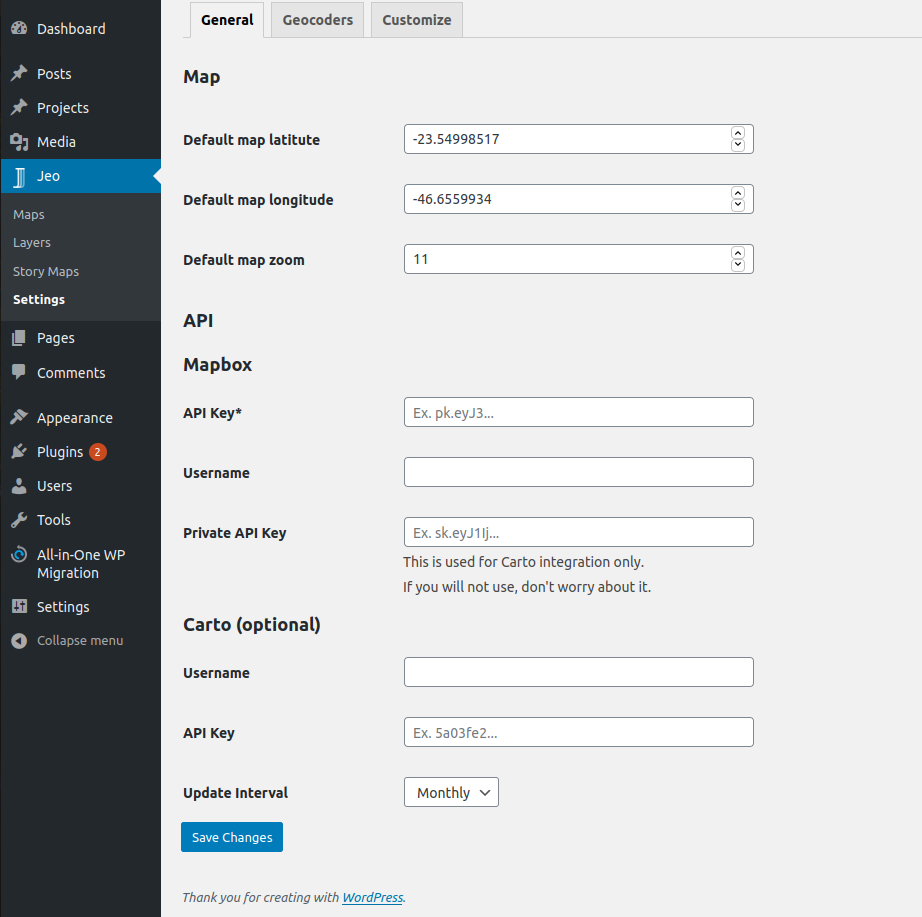
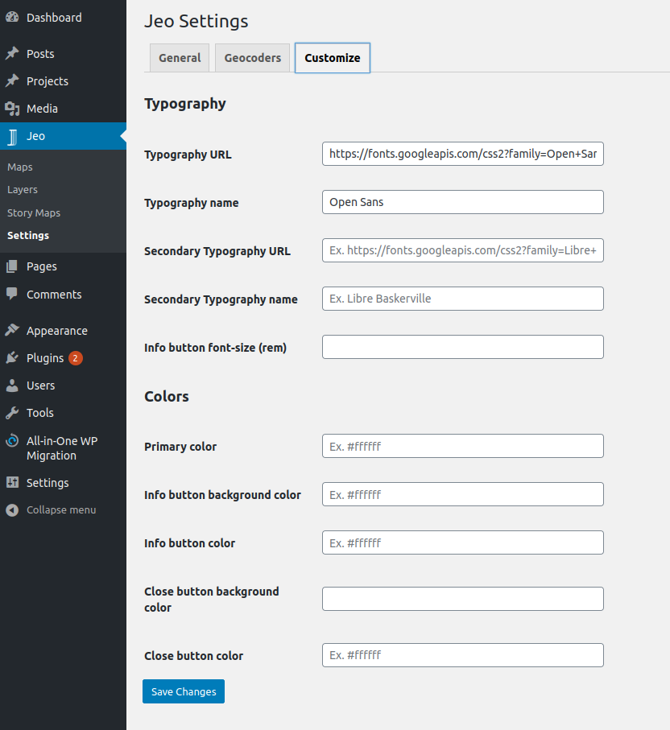
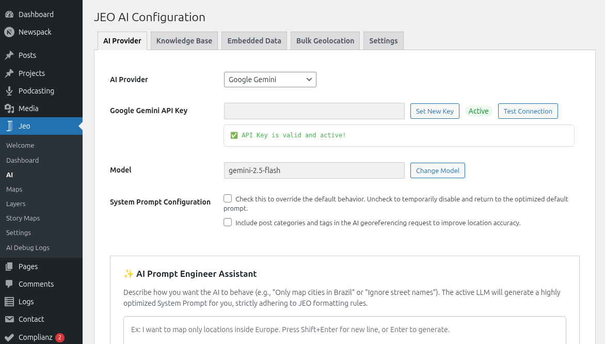

Getting started
Installing
After activating the plugin, a new item will appear on the WordPress dashboard: the Jeo menu, containing:
- Maps — Create and manage interactive map posts
- Layers — Create and manage data layer posts
- Story Maps — Create scrollytelling map experiences
- AI — Configure AI providers, knowledge base, and bulk geolocation
- Settings — General map, geocoder, and style settings
Configuring the plugin
Under JEO main menu, at Jeo → Settings, you can configure:
- the default latitude, longitude, and zoom for your maps;
- the Mapbox API settings that'll be used by the plugin;
- the geocoder that'll be used by the plugin — currently Nominatim is the built-in option, with extensibility for additional geocoders via hook.
- the style of some functionalities of the plugin, such as fonts and colors.


Configuring AI features
Under Jeo → AI, you can configure AI-powered features:
- Select an AI provider (Google Gemini, OpenAI, DeepSeek, Anthropic, Ollama, Mistral, and others) and enter the API key.
- Set up the Knowledge Base (RAG) to index your posts and layers for smarter AI results.
- Configure bulk geolocation for processing posts in batches.
See AI Settings for detailed instructions.
